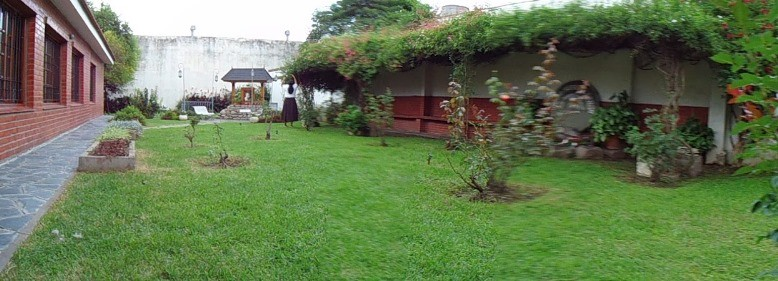
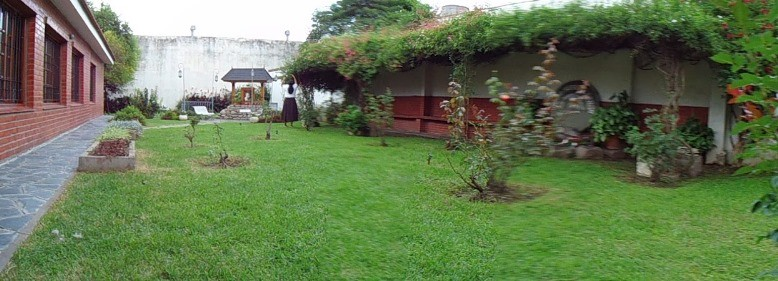
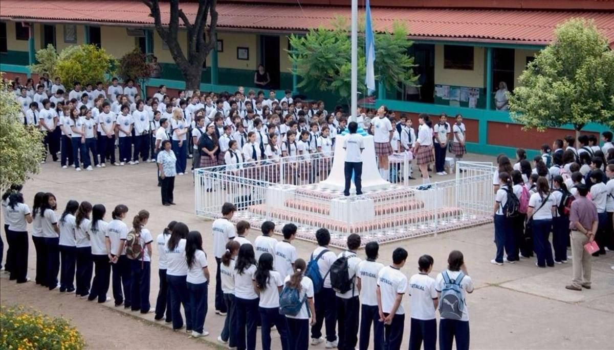
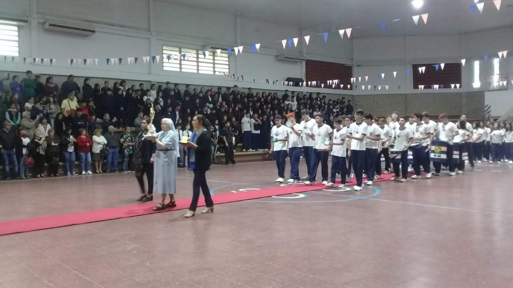
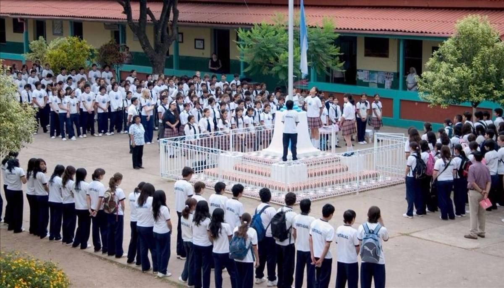
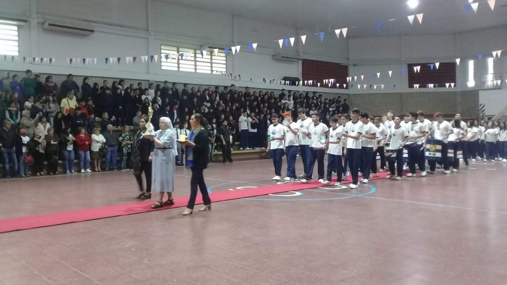
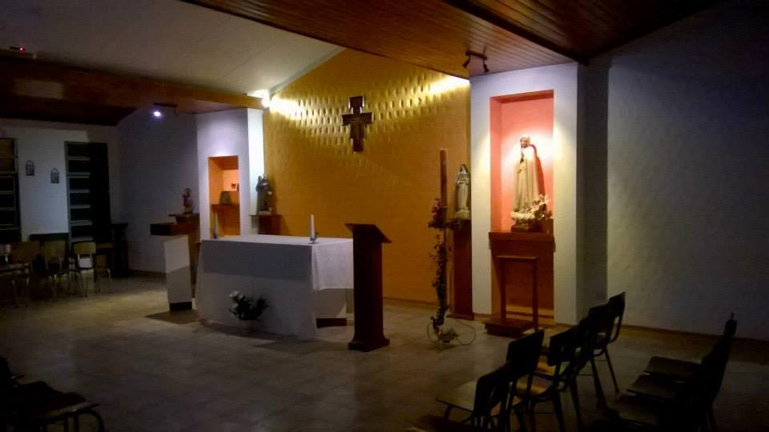
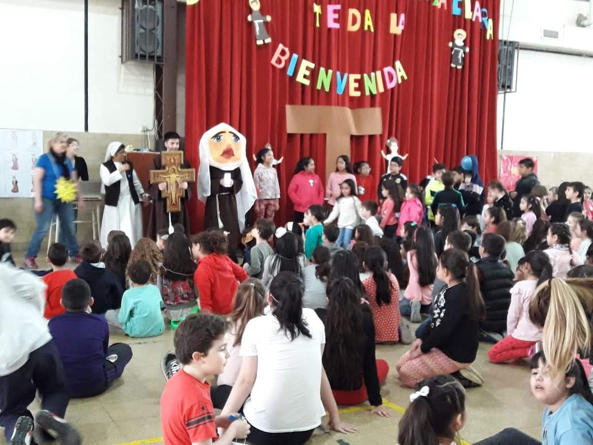
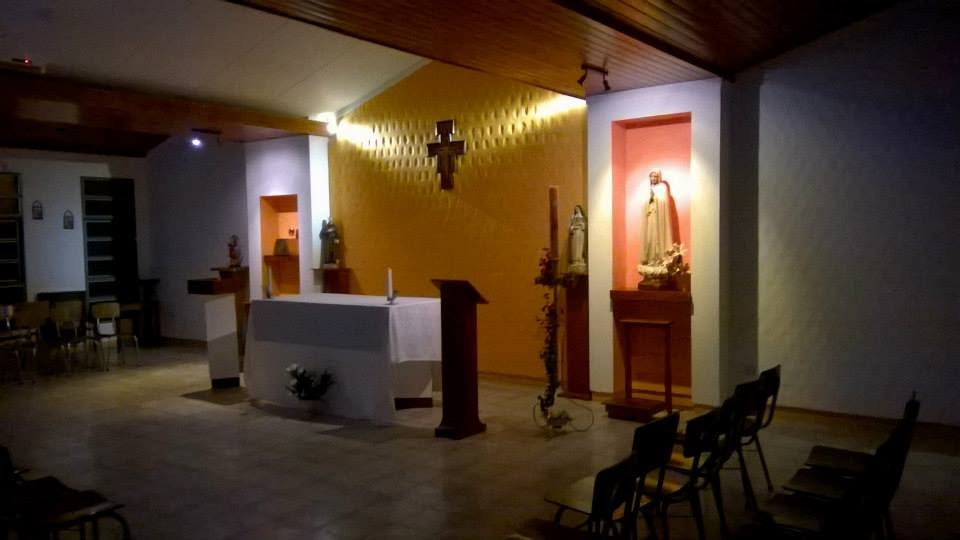
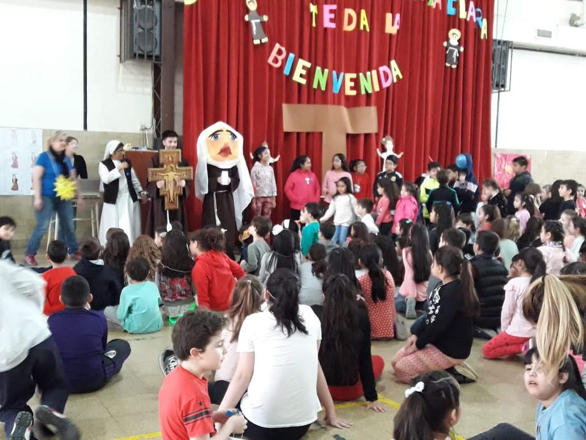

.png)

Comunidades y Colegios
Descripcion
Comunidades Religiosas
Comunidad "Noviciado Santa Clara", Salta Capital
Obras:Sede del Gobierno Provincial y Casa de Formación.
Dirección: Mendoza 1232
Contacto: (agregar información)
Actividades: Actividades pastorales de la comunidad religiosa y encuentros vocacionales.
 

Comunidad "Sangrada Familia", Tartagal, Salta.
Obras: Colegio Santa Catalina de Bolonia
Dirección: Calle Av. 9 de Julio y Güemes
Contacto: Telefono: 387-3421299
Correo: Colegio8123santacatalina@hotmail.com
Actividades: Gestión del colegio. Actividades pastorales de la comunidad religiosa.
 



Comunidad "" Rosario de Lerma
Obras: (Agregar información)
Dirección: Calle (Agregar dirección)
Contacto: (agregar información)
Actividades: Gestión del colegio. Actividades pastorales de la comunidad religiosa.
Comunidad "Santa Clara", José C. Paz, Bs.As
Obras: (Agregar información)
Dirección: Calle (Agregar dirección)
Contacto: (agregar información)
Actividades: Gestión del colegio. Actividades pastorales de la comunidad religiosa.
Comunidad "San José", C.A.B.A, Bs.As
Obras: (Agregar información)
Dirección: Calle (Agregar dirección)
Contacto: (agregar información)
Actividades:Gestión del colegio. Actividades pastorales de la comunidad religiosa.
Comunidad "Nuestra Señora de Fátima", Rio Gallegos, Santa Cruz.
Obras: Colegio "Nuestra Señora de Fátima".
Dirección: Estrada 751
Contacto: (agregar información)
Actividades:Gestión del colegio. Actividades pastorales de la comunidad religiosa.
 



Comunidad "San Francisco", Ushuaia, Tierra del Fuego
Obras: (Agregar información)
Dirección: Calle (Agregar dirección)
Contacto: (agregar información)
Actividades: (Agregar información)